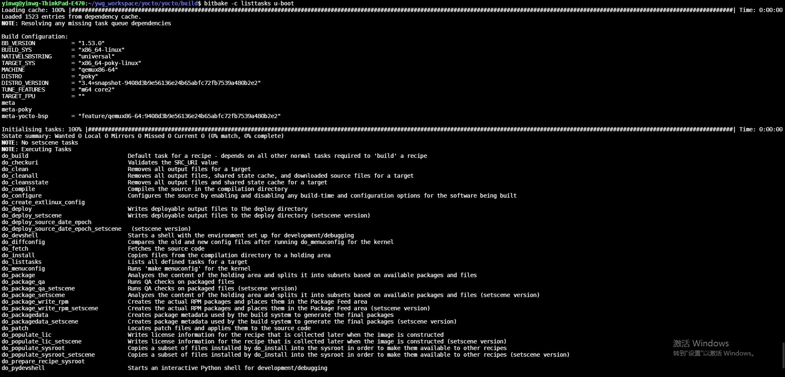

8.7.3. 任务以及变量汇总
8.7.3.1. 自动构建的任务
任务列表 |
说明 |
do_build |
所有recipes的默认任务,此任务依赖其他任务 |
do_compile |
编译源代码，此任务运行在$B路径下 |
do_compile_ptest_base |
编译运行时的测试程序 |
do_configure |
如果没有找到Makefile或者CLEANBROKEN被设置为1，此任务什么都不做。 |
do_deploy |
此任务输出目标文件到${DEPLOYDIR},工作路径为${B}。do_deploy默认不添加为任务，需要手动添加，如addtask deploy after do_compile |
do_fetch |
获取源代码，此任务使用SRC_URI变量和参数来确定代码源 |
do_image |
image生成任务 |
do_image_complete |
在do_image完成之后运行，相当于do_image的post process |
do_install |
复制文件到${D}路径 |
do_package |
打包文件，此任务使用PACKAGES和FILES变量 |
do_package_write_deb |
创建deb包，并将其放到${DEPLOY_DIR_DEB}路径 |
do_package_write_tar |
创建tar包，并将其放到${DEPLOY_DIR_TAR}路径 |
do_patch |
定位补丁文件并将其应用到源代码,可以在SRC_URI语句中使用“apply=yes”或者”apply=no”来配置是否使用补丁文件 |
do_populate_lic |
写入license信息 |
do_populate_sdk |
为可安装的SDK创建文件和目录 |
do_populate_sysroot |
将do_install任务a安装的文件子集复制到sysroot中 |
do_rm_work |
删除工作目录 |
do_unpack |
将源代码解压到${WORKDIR}路径 |
8.7.3.2. 手动执行的任务
以下任务通常手动执行的，可以通过以下方式执行
$ bitbake -c 任务 recips
bitbake -c listtasks u-boot

任务列表 |
说明 |
do_checkuri |
验证SRC_URI |
do_clean |
删除所有输出文件 |
do_cleanall |
删除所有输出文件，共享状态缓存和下载的源文件 |
do_cleansstate |
删除输出文件和共享缓存 |
do_listtasks |
列出目标已定义的任务 |
8.7.3.3. image相关任务
任务列表 |
说明 |
do_bootimg |
创建可以启动的镜像文件 |
do_bundle_initramfs |
创建initramfs和镜像打包在一起的image |
do_rootfs |
创建根文件系统 |
do_testimage_auto |
创建可自动运行测试程序的image |
8.7.3.4. 内核相关任务
任务列表 |
说明 |
do_compile_kernelmodules |
编译内核模块 |
do_diffconfig |
创建do_kernel_configme任务生成的与之前的配置文件的差别， 可运行bitbake linux-yocto -c diffconfig 来运行此任务 |
do_kernel_checkout |
检出分支 |
do_kernel_configcheck |
验证由do_kernel_menuconfig任务生成的配置 |
do_kernel_configme |
将所有的内核配置片段合并到一起然后配置内核 |
do_kernel_menuconfig |
启动内核配置工具, bitbake linux-yocto -c menuconfig |
do_kernel_metadata |
收集编译内核的配置信息 |
do_sizecheck |
此任务会根据KERNEL_IMAGE_MAXSIZE检查image大小是否超限 |
do_strip |
对vmlinux进行strip操作 |
8.7.3.5. 变量
变量 |
说明 |